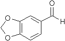

CAS: [120-57-0]
piperonal [merck index]
piperonal [roempp]
purification of piperonal [01]
[merck index]
THE MERCK INDEX on CD-ROM / Version 12:3 / 1999
[roempp]
roempp lexikon chemie version 2.0, cd-rom,
stuttgart / new york: georg thieme verlag 1999
[01]
patent JP8099971, 1996-04-16
"purification of piperonal"
HARADA KATSUMASA, SUGIYAMA TOMOSHI; UBE IND LTD
abstract:
PURPOSE: to obtain nitro compound-free piperonal as a product of
high
purity by oxidizing 3,4-methylenedioxymandelic acid with nitric
acid.
CONSTITUTION: in the purification of piperonal formed by nitric
acid
oxidation of 3,4-methylenedioxybenzene which is synthesized from
1,2- methylenedloxybenzene and glyoxylic acid, the reaction
mixture
containing piperonal is treated with a sulfite salt and the
piperonal sulfite
is rinsed with an organic solvent, then the salt is decomposed
with an
acid or a base to regenerate piperonal.